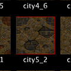

Creating New Objects
There are several ways to create new brushes and entities. It is recommended that you try all of the methods explained below because it depends on the context which one is most useful. In other words, sometimes it is quicker to simply duplicate an existing brush and sometimes it is quicker to create a new brush from scratch. In the next section, you will learn how to draw new brushes with your mouse, which is the most convenient way to create new geometry.
The Editing Plane
It is very important that you understand how the view direction of the camera relates to editing. Since the mouse is a 2D input device, you cannot directly control all three dimensions when you edit objects with the mouse. For example, if you want to move a brush around, you can only move it in two directions by dragging it. Because of this, many editing operations take the view direction into account to decide which dimensions the mouse movements should be mapped to. So if you are looking down along the Z axis while you are moving a brush, your mouse movement will be mapped to the X and Y axes and the brush can only be moved on the XY plane. The plane which the mouse movement is mapped to in editing operations is called the editing plane. In general, TrenchBroom chooses either the XY plane, the XZ plane or the YZ plane as the editing plane depending on whether the camera looks generally in the direction of the (positive or negative) Z, Y or X axis, respectively.

Remember that you can use the quick info bar at the bottom of the 3D view to keep your orientation. On top of that, the compass gives you a visual hint as to which plane is the current editing plane. In the screenshot on the left, the predominant axis of the camera direction is the Y axis, which is why it has gray color. The two axes which are rendered in color make up the editing plane, which in this case is the XZ plane.
Drawing New Brushes Using the Mouse
Creating a new brush from scratch is easily done in TrenchBroom. Simply left click and drag your mouse on the 3D view to create a new cuboid. The cuboid will aligned to the current editing plane and its thickness will be set to the current grid size. You can use the mouse wheel to change the thickness of the brush.
The position of the new brush depends on where you started to draw it. If you started in the void, it is positioned at a default distance from the camera. If you started your drag on another brush, it is positioned on the point on that brushes surface where you clicked. This makes it easy to create brushes which are already correctly aligned to other brushes.
Note that TrenchBroom automatically selects the most recently used texture when you draw a brush. The most recently used texture updated whenever you select a face or when you select a texture in the texture browser. A red border is drawn around that texture in the browser. Click here to find out more about texture management in TrenchBroom.
Inserting Prefabs
TrenchBroom comes with a selection of predefined prefabs which you can insert into your maps. To insert a prefab, switch to the Brush tab of the inspector and double click on the prefab you wish to insert. The prefab will be inserted in front of the camera. Be aware that some of the textures which are used by the prefab may not be available in your map. If that is the case, you must load the appropriate texture wads in the texture manager.
Dragging Entities From The Entity Browser
The easiest way to create a new point entity is to drag it from the entity browser. Switch to the Entity tab of the inspector to reveal the entity browser and find the entity you wish to insert. Now click this entity with the left mouse button and drag it into the 3D view. Once your mouse cursor enters the 3D view, the entity will be created and positioned on the surface of the brush under the mouse cursor. Keep dragging until it is correctly placed and release it. Note that if there is nothing under the mouse cursor, the entity will be positioned at a default distance to the camera.